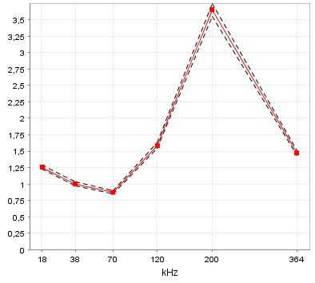

This view shows the frequency response curve with standard error curves for the currently selected region(s).

The normalized frequency response, r, for frequency f with fN as normalization frequency is defined as
r(f) = s̅v(f) / s̅v(fN)
where
s̅v(f) = (1 / Nf) ∑ sv(f)
The summation is over all samples in the selected regions (Nf samples).
If a sample has a sv value below the lower threshold or above the upper threshold (if the upper threshold is active),
then sv = 0 is used for that sample.